Overview
I wanted to build a robot arm that didn't need a controller. Instead you just tell it where to go. The project combined everything I like doing: mechanical design, 3D printing, electronics, and embedded programming.
speech recognition→ USB serial
(PySerial)→ Arduino
parses command→ 5 servos move
The Raspberry Pi listens through a microphone and turns speech into text with Google's speech recognition. It sends that text to an Arduino Uno over USB. The Arduino matches the text to a command and sets each servo to the position I asked for. Each joint has ten preset positions, 18° apart.
CAD & 3D printing
I designed every part in Fusion 360 and printed them. I started with the claw. A servo turns a gear, and the gear opens and closes the two prongs through a pair of linkages. I generated the gears with Fusion's Spur Gear add-in, so I could set the tooth count and size as parameters.
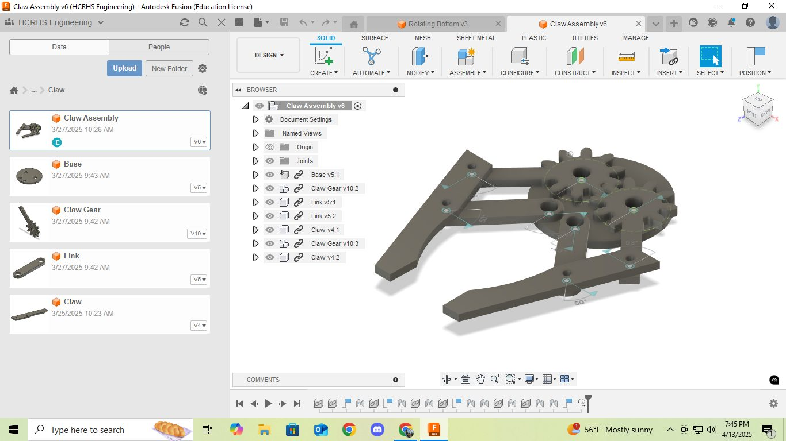
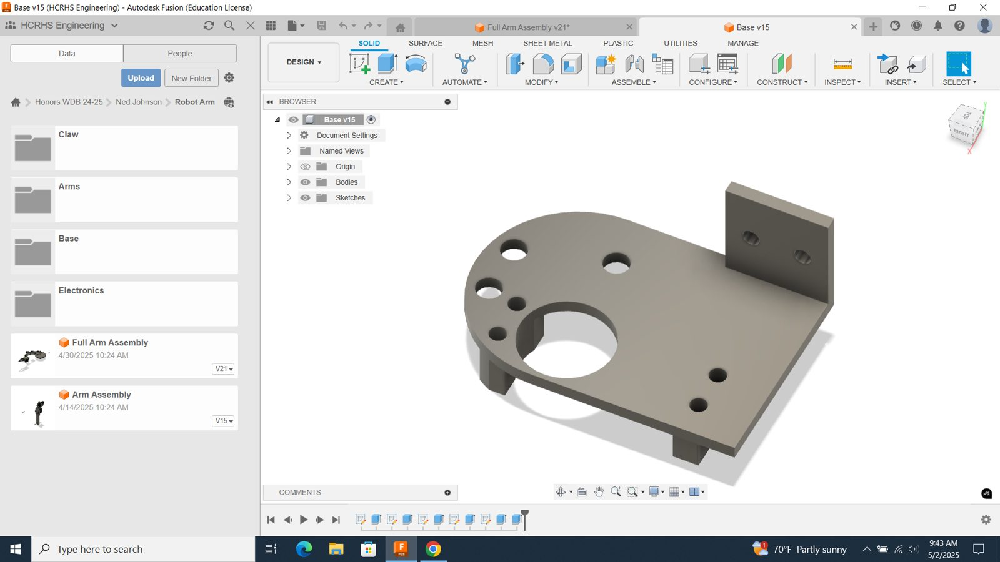
Then I worked down the arm: a rotating base driven by a servo, a base arm joint, a middle arm joint, and a wrist. Each joint holds the servo that drives the next one. A few iterations made a big difference:
- Straight arm joints (V2): easier to print, and the arms no longer clip each other as they rotate.
- Center cutout (V3): the next joint bolts straight onto the servo horn, so I didn't need an extra bridging part.
- Redesigned base: mounts directly to the bottom rotation servo, with a larger opening so the arm servo fits reliably.
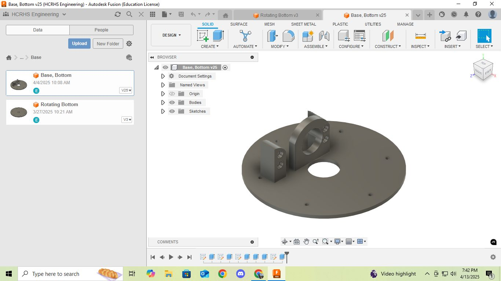
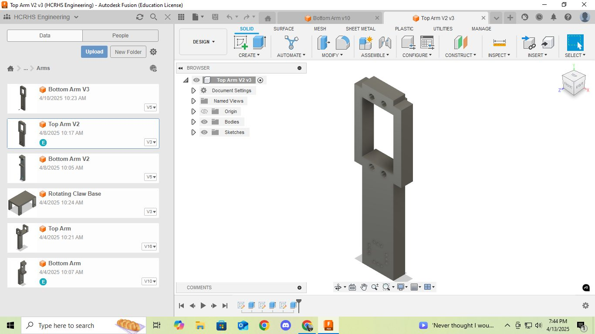
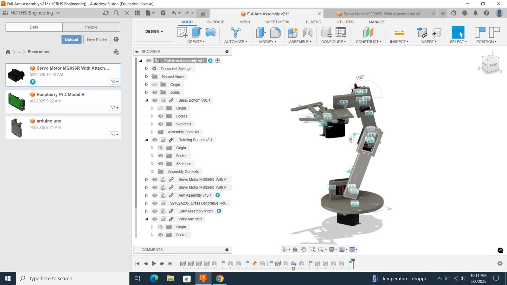
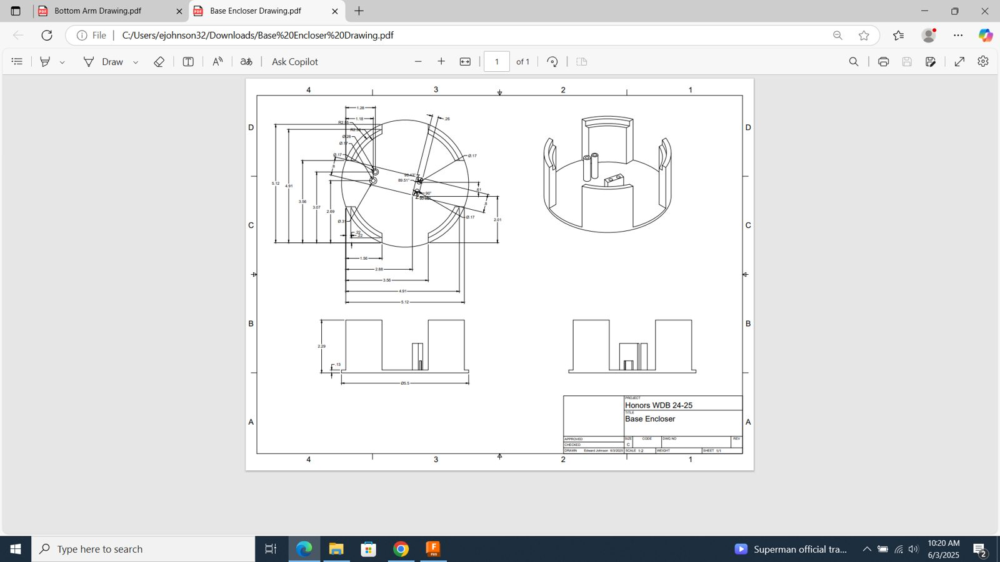
Electronics
The arm uses five servo motors. Each has a red power wire, a black ground wire, and an orange signal wire that goes to the Arduino. I wired the servos in parallel to the battery supply. In parallel, every servo sees the same 6 V. In series I would have needed 30 V to run all five.
There were two ways to connect the Pi and the Arduino: directly through the GPIO pins with UART, or through a USB cable. The GPIO route needs a level shifter, because the Arduino's 5 V logic could damage the Pi's 3.3 V pins. I used USB instead. The Pi detects the Arduino as a serial device (/dev/ttyACM0), and no extra hardware is needed.
Software
Raspberry Pi (Python)
I set up the Pi in a Python virtual environment and installed the SpeechRecognition, PyAudio, and pyserial libraries there. The script opens a serial connection to the Arduino, then loops forever: listen, convert speech to text, and send the text with a newline at the end.
import speech_recognition as sr import serial import time arduino = serial.Serial('/dev/ttyACM0', 9600) # baud rate must match the Arduino time.sleep(2) recognizer = sr.Recognizer() while True: with sr.Microphone(device_index=2) as source: audio = recognizer.listen(source) command = recognizer.recognize_google(audio) print(command) arduino.write((command + "\n").encode())
Arduino (C++)
The Arduino sketch uses the Servo library and attaches each servo to its own pin. In loop() it waits for Serial.available(), then reads the incoming text with Serial.readStringUntil('\n') and calls trim() to remove stray spaces. A chain of if statements maps each spoken command to a servo angle.
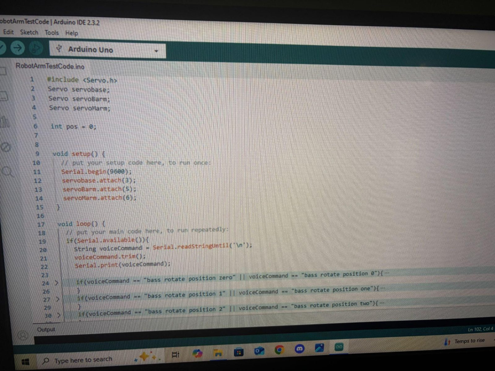
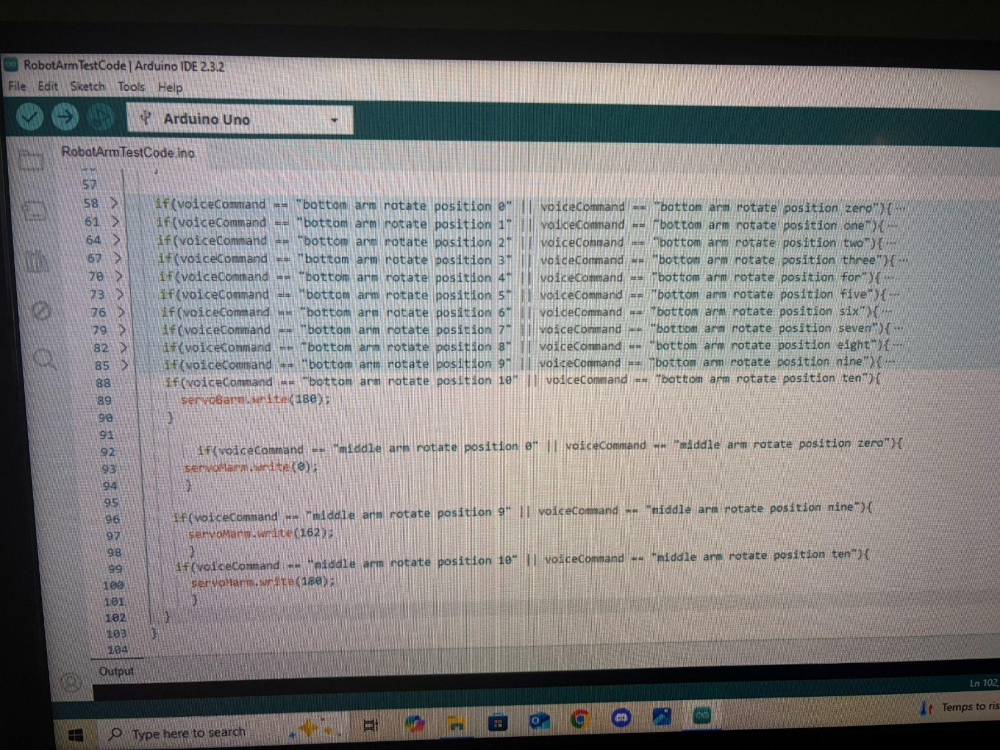
Testing
I tested in stages, so when something broke I knew which part caused it. First a single servo from the Arduino IDE. Then voice control of the base. Then commanding each joint to a specific position.
Challenges & lessons learned
Breaking the Pi's software setup. Raspberry Pi OS blocks installing Python packages system-wide and shows an externally-managed-environment error. While I tried fixes from several different sources, the installs conflicted and the Pi stopped working properly. I had to wipe the SD card, reinstall the OS, and start the code over.
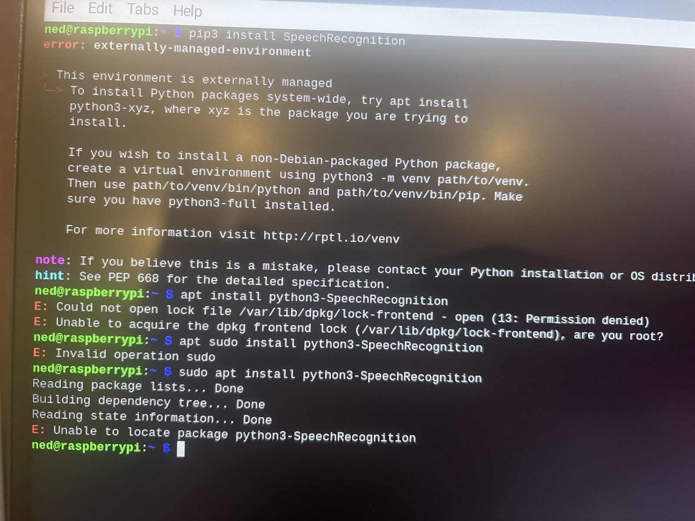
venv), reboot after every install, and change one thing at a time.UART vs. USB. My first attempt sent commands over UART through the GPIO pins, and it didn't work. Switching to PySerial over USB was simpler, needed no level shifter, and worked on the first try.
Designing for printing. Straightening the arm joints and letting each joint mount directly to a servo cut down on print failures, extra parts, and parts colliding as the arm moved.
The finished arm
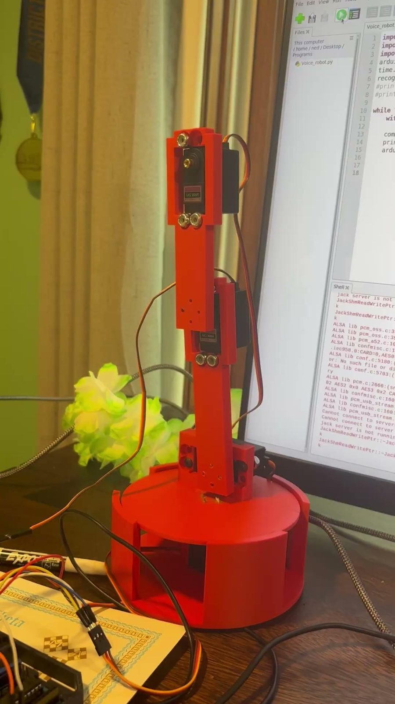
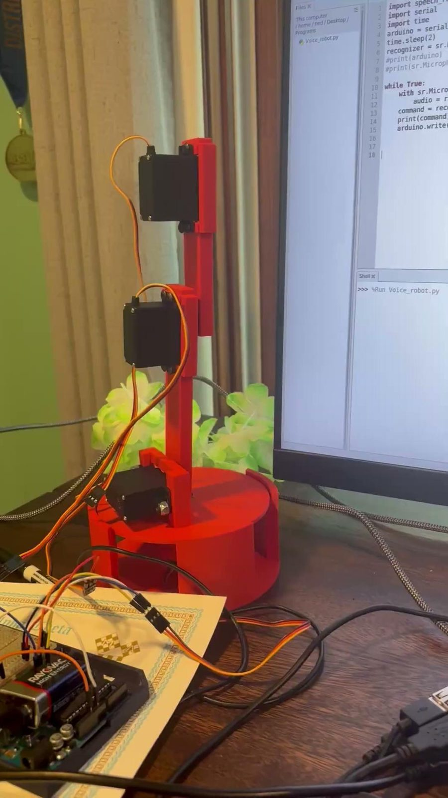